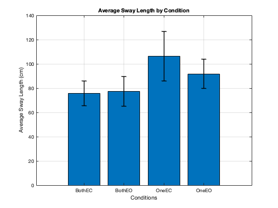

Contents
%Juan E. Leon %ju932256
Standing balance analysis **
close all
clearvars
clc
load the copStand.mat
load('copStand.mat');
plot the cop trajectories
in one figure, use 12 subplots to plot the COP for each trial plot subjects as rows and conditions (BothEC, BothEO, OneEC, OneEO) as columns
Have the AP direction be the y-axis and the ML direction be the x-axis. The COP data is in millimeters.
use title for the top row of subplots to label the column by the condition use ylabel for the first column of subplots to add the ylabels use xlabel for the bottom row of subplots to add the xlabels use sgtitle to add a supertitle for the whole figure
%Creating Subplots % First Column figure; subplot(3,4,1) %First Row plot(S1_BothEC.time, S1_BothEC.CoP_X, 'r', 'DisplayName', 'COP X'); hold on; plot(S1_BothEC.time, S1_BothEC.CoP_Y, 'b', 'DisplayName', 'COP Y'); %xlabel('Time (s)'); ylabel('COP (mm)'); title('Both EC'); legend('show'); sgtitle('COP Trajectories'); grid on; subplot(3,4,5); % Second Row plot(S2_BothEC.time, S1_BothEC.CoP_X, 'r', 'DisplayName', 'COP X'); hold on; plot(S2_BothEC.time, S1_BothEC.CoP_Y, 'b', 'DisplayName', 'COP Y'); %xlabel('Time (s)'); ylabel('COP (mm)'); legend('show'); grid on; subplot(3,4,9); % Third Row plot(S3_BothEC.time, S1_BothEC.CoP_X, 'r', 'DisplayName', 'COP X'); hold on; plot(S3_BothEC.time, S1_BothEC.CoP_Y, 'b', 'DisplayName', 'COP Y'); xlabel('Time (s)'); ylabel('COP (mm)'); legend('show'); grid on; %Second Column subplot(3,4,2) %First Row plot(S1_BothEO.time, S1_BothEO.CoP_X, 'r', 'DisplayName', 'COP X'); hold on; plot(S1_BothEO.time, S1_BothEO.CoP_Y, 'b', 'DisplayName', 'COP Y'); %xlabel('Time (s)'); %ylabel('COP (mm)'); title('BothEO'); legend('show'); grid on; subplot(3,4,6); % Second Row plot(S2_BothEO.time, S1_BothEO.CoP_X, 'r', 'DisplayName', 'COP X'); hold on; plot(S2_BothEO.time, S1_BothEO.CoP_Y, 'b', 'DisplayName', 'COP Y'); %xlabel('Time (s)'); %ylabel('COP (mm)'); legend('show'); grid on; subplot(3,4,10); % Third Row plot(S3_BothEO.time, S1_BothEO.CoP_X, 'r', 'DisplayName', 'COP X'); hold on; plot(S3_BothEO.time, S1_BothEO.CoP_Y, 'b', 'DisplayName', 'COP Y'); xlabel('Time (s)'); %ylabel('COP (mm)'); legend('show'); grid on; %Third Column subplot(3,4,3) %First Row plot(S1_OneEC.time, S1_OneEC.CoP_X, 'r', 'DisplayName', 'COP X'); hold on; plot(S1_OneEC.time, S1_OneEC.CoP_Y, 'b', 'DisplayName', 'COP Y'); %xlabel('Time (s)'); %ylabel('COP (mm)'); title('OneEC'); legend('show'); grid on; subplot(3,4,7); % Second Row plot(S2_OneEC.time, S1_OneEC.CoP_X, 'r', 'DisplayName', 'COP X'); hold on; plot(S2_OneEC.time, S1_OneEC.CoP_Y, 'b', 'DisplayName', 'COP Y'); %xlabel('Time (s)'); %ylabel('COP (mm)'); legend('show'); grid on; subplot(3,4,11); % Third Row plot(S3_OneEC.time, S1_OneEC.CoP_X, 'r', 'DisplayName', 'COP X'); hold on; plot(S3_OneEC.time, S1_OneEC.CoP_Y, 'b', 'DisplayName', 'COP Y'); %xlabel('Time (s)'); %ylabel('COP (mm)'); legend('show'); grid on; %Fourth Column subplot(3,4,4) %First Row plot(S1_OneEO.time, S1_OneEO.CoP_X, 'r', 'DisplayName', 'COP X'); hold on; plot(S1_OneEO.time, S1_OneEO.CoP_Y, 'b', 'DisplayName', 'COP Y'); %xlabel('Time (s)'); %ylabel('COP (mm)'); title('OneEO'); legend('show'); grid on; subplot(3,4,8); % Second Row plot(S2_OneEO.time, S1_OneEO.CoP_X, 'r', 'DisplayName', 'COP X'); hold on; plot(S2_OneEO.time, S1_OneEO.CoP_Y, 'b', 'DisplayName', 'COP Y'); %xlabel('Time (s)'); %ylabel('COP (mm)'); legend('show'); grid on; subplot(3,4,12); % Third Row plot(S3_OneEO.time, S1_OneEO.CoP_X, 'r', 'DisplayName', 'COP X'); hold on; plot(S3_OneEO.time, S1_OneEO.CoP_Y, 'b', 'DisplayName', 'COP Y'); xlabel('Time (s)'); %ylabel('COP (mm)'); legend('show'); grid on;
create a function to calculate the SWAY LENGTH using the equation in Table 4
From the following paper. Quijoux, F. et al. (2021). A review of center of pressure (COP) variables to quantify standing balance in elderly people: Algorithms and open-access code. Physiological Reports, 9(22), e15067. https://doi.org/10.14814/phy2.15067
function sway_length = calc_sway_length(COPx, COPy) %COP delta dx = diff(COPx); dy = diff(COPy); %distance between points distances = sqrt(dx.^2 + dy.^2); %sum of distances sway_length = sum(distances); end
barplot with errorbars of the average sway length in cm for the 4 conditions.
For each condition, average the sway length for the 3 subjects. plot average sway length on the y-axis and conditions on the x-axis. be sure to label everything
Note the data is in millimeters so you need to convert to cm Make sure everything is labeled. Variables should have units. Calculate sway length for each condition (BothEC, BothEO, OneEC, OneEO)
%Subject 1 sway_S1_BothEC = calc_sway_length(S1_BothEC.CoP_X, S1_BothEC.CoP_Y) / 10; sway_S1_BothEO = calc_sway_length(S1_BothEO.CoP_X, S1_BothEO.CoP_Y) / 10; sway_S1_OneEC = calc_sway_length(S1_OneEC.CoP_X, S1_OneEC.CoP_Y) / 10; sway_S1_OneEO = calc_sway_length(S1_OneEO.CoP_X, S1_OneEO.CoP_Y) / 10; % Subject 2 sway_S2_BothEC = calc_sway_length(S2_BothEC.CoP_X, S2_BothEC.CoP_Y) / 10; sway_S2_BothEO = calc_sway_length(S2_BothEO.CoP_X, S2_BothEO.CoP_Y) / 10; sway_S2_OneEC = calc_sway_length(S2_OneEC.CoP_X, S2_OneEC.CoP_Y) / 10; sway_S2_OneEO = calc_sway_length(S2_OneEO.CoP_X, S2_OneEO.CoP_Y) / 10; % Subject 3 sway_S3_BothEC = calc_sway_length(S3_BothEC.CoP_X, S3_BothEC.CoP_Y) / 10; sway_S3_BothEO = calc_sway_length(S3_BothEO.CoP_X, S3_BothEO.CoP_Y) / 10; sway_S3_OneEC = calc_sway_length(S3_OneEC.CoP_X, S3_OneEC.CoP_Y) / 10; sway_S3_OneEO = calc_sway_length(S3_OneEO.CoP_X, S3_OneEO.CoP_Y) / 10; % putting into matrix sway_lengths = [ sway_S1_BothEC, sway_S2_BothEC, sway_S3_BothEC; sway_S1_BothEO, sway_S2_BothEO, sway_S3_BothEO; sway_S1_OneEC, sway_S2_OneEC, sway_S3_OneEC; sway_S1_OneEO, sway_S2_OneEO, sway_S3_OneEO ]; % average and standard deviation mean_sway = mean(sway_lengths, 2); std_sway = std(sway_lengths, 0, 2); % x-axis x_ticks = {'BothEC', 'BothEO', 'OneEC', 'OneEO'}; %Bar plot figure; bar(mean_sway); hold on; errorbar(1:4, mean_sway, std_sway, 'k', 'LineStyle', 'none', 'LineWidth', 1.5); %labels xticks(1:4); xticklabels(x_ticks); xlabel('Conditions'); ylabel('Average Sway Length (cm)'); title('Average Sway Length by Condition'); grid on; %Display the figure hold off;